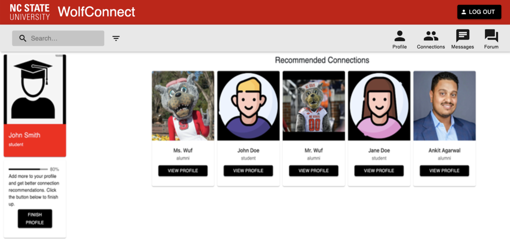
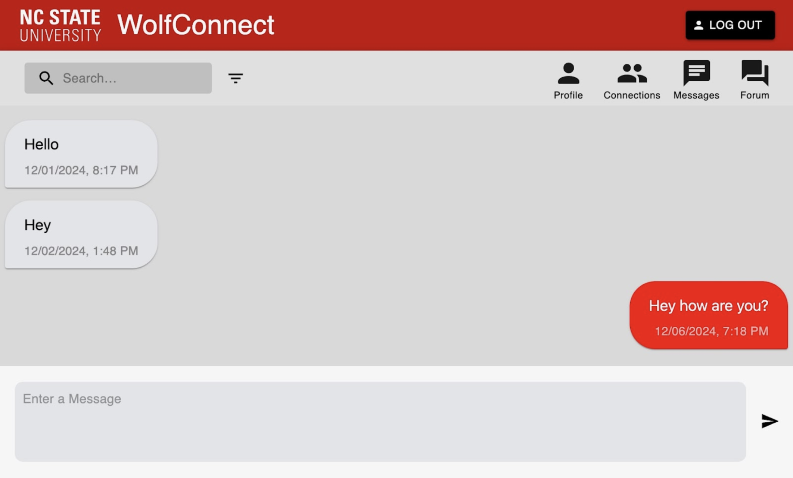
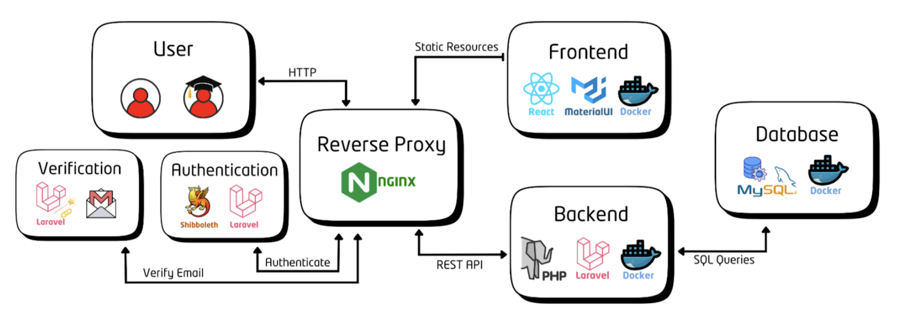
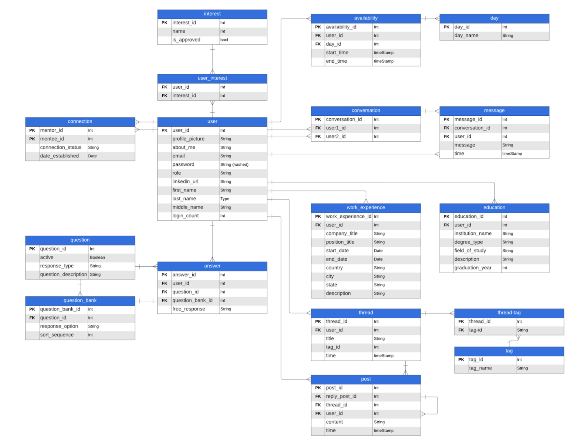

WolfConnect is a mentorship platform designed to connect NC State students and alumni, fostering
academic and professional growth through meaningful connections. This project highlights my skills
in frontend and backend development, as well as database design and deployment. I contributed to
this project as part of an agile team, utilizing React and Material UI for the frontend, PHP with
Laravel for the backend, and MySQL for the database. The project is containerized using Docker to
ensure consistency across environments and deployed on an Ubuntu virtual machine, enabling access
within the NC State network.
Features
Our team successfully implemented the WolfConnect discussion forum to enhance community interaction and knowledge sharing among students and alumni. Users can create initial posts with a title and description, generating threads that others can reply to, fostering meaningful conversations. The forum homepage features a user-friendly feed of all active threads, allowing users to easily browse, search, and engage in topics of interest. This feature creates a dynamic space for professional networking, academic collaboration, and shared experiences within the WolfConnect platform.

WolfConnect helps users build relationships by showing recommended connections on the homepage and letting them search for any user. From there, users can visit profiles and send connection requests. Once the request is accepted, they can message each other and see more details about each other’s profiles. Connected users can also update their connection status to "mentorship" if they would like.
WolfConnect features a private messaging system designed to facilitate meaningful communication between users. Messaging becomes available only after forming a connection with another user. Once connected, the option to send a message appears on the user’s profile. In addition to accessing a conversation with a user through their profile, users also have access to a dedicated page that displays links to all of their ongoing conversations. On the page for a conversation, messages are displayed in chronological order based on their timestamp. New messages are promptly displayed to the user when they are delivered.

WolfConnect allows users to create an account seamlessly with Laravel's email verification feature.
Upon registration, the system sends a verification email to the user's provided email address using
a dedicated Gmail account configured with an app password in the .env file for secure email delivery.
Once the user verifies their email, they can sign in and are guided through a series of profile creation pages.
These pages allow users to add key details to their profiles, such as work experiences and educational
achievements like bachelor’s degrees. This information is then displayed to other users on the platform,
enhancing connectivity and engagement.
High Level Design
WolfConnect was built using a streamlined architecture:
Frontend: Built with React, JavaScript, and Material UI, sending HTTP requests via a reverse proxy. Containerized with docker.
Backend: Laravel (PHP) processes requests, with students authenticating via Shibboleth and alumni via magic links. Containerized with docker.
Database: MySQL stores user data and handles requests, ensuring reliable and efficient data management. Containerized with docker.

Database Schema

User Profiles:
Managed using the user, work_experience, and education tables to store personal, professional, and academic details.
Private Messaging:
Enabled by the conversation and message tables, which track conversations and messages between users.
Connections:
Handled by the connection table, which manages connection requests and relationships between users.
Discussion Forum:
Built with the post, thread, tag, and forum_threads tables, allowing users to create and engage with posts, threads, and categorized topics.
Mentorship Interests:
Supported by the interest and user_interest tables, which allow users to add and display interests while enabling administrators to manage them.
Availability Scheduling:
Facilitated by the availability and day tables, which store users' available time slots for mentorship.
Application Questions and Answers:
Organized in the question, question_bank, and answer tables, enabling sponsors to collect user responses.